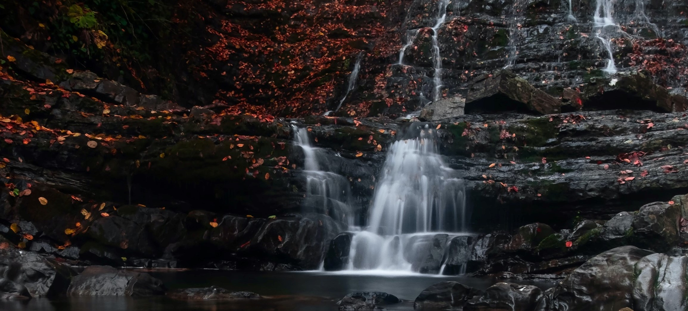
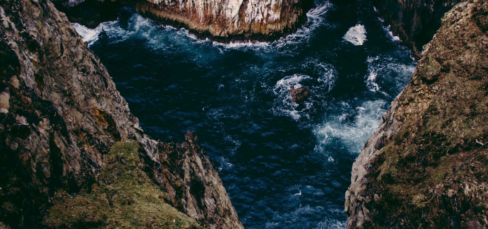

NATURE HEALS
Spending time outside is good for the heart, research shows, and since high blood pressure costs the U.S. approximately $48.6 billion per year and affects 1 in 3 Americans, visiting green spaces may be a simple and affordable way to improve heart health. A large June 2016 study found that nearly 10% of people with high blood pressure could get their hypertension under control if they spent just 30 minutes or more in a park each week. “If everyone were to make time for nature, the savings on health care costs could be incredible,” says study author Danielle Shanahan, a research fellow at the University of Queensland in Australia.
The fresh air could be one factor, since air pollution has been linked to a higher risk for heart attacks, but since the study participants lived in cities (and therefore were also being exposed to air pollution), that likely isn’t the only driver. Scientists think stress reduction also plays a part. “Nature is undemanding,” says Shanahan. “It requires effortless attention to look at the leaves of a tree, unlike the constant emails at work or the chores at home.”
the more we start connecting with nature the more closer we we get , we then enter the dream land opf peace realem . which is surely to redus=ce your strees, which is surely to bring you calmes that you desire.


it is how we think nature is only here to satisfy our needs , but what if ypu find out is is maor than that , it is real nessary to take care of such beings
Trees’ natural fragrance may also play a role, as some studies have shown that phytoncides lower blood pressure by quelling the body’s fight-or-flight response, which stresses the body.

Looking at a stunning waterfall or undulating countryside can do more than enrich your Instagram feed: it can also elicit feelings of awe that bring a number of health benefits. In a 2015 study, researcher Paul Piff of the University of California, Irvine, found that people who spent 60 seconds looking up at towering trees were more likely to report feeling awe, after which they were more likely to help a stranger than people who looked at an equally tall–but far less awe-inspiring–building